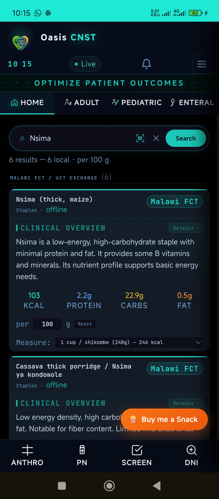

BSc Nutrition & Dietetics graduate (KUHeS) and self-taught developer. I bridge the gap between clinical evidence and low-resource realities, practicing dietetics and building the software to support it.
Trained across the full scope of dietetic practice: MNT, NCP, enteral & parenteral support, community nutrition, and food-service management, with hands-on experience in multidisciplinary teams across hospital and community settings in Malawi.
Oasis CNST is what I built when I saw what was missing at the bedside: an offline-first clinical nutrition tool, localised for Malawi, with AI-assisted NCP documentation. Same instinct, different medium. Find the gap, fill it.
Evidence-based dietetic practice across clinical, community, and food-service nutrition, from screening through to documentation and care planning.
Building fast, offline-capable web apps with vanilla JS and React, backed by Firebase and Appwrite.
Applied research methods, programme management, and clear scientific communication across academic and clinical contexts.

An offline-first clinical nutrition system built for low-resource settings. Covers 11+ modules including adult & pediatric nutrition, burns, enteral & parenteral support, validated screening tools, and AI-assisted NCP documentation, with a localised Malawian food composition database.
Smaller experiments, in-progress work, and code samples.
Pioneer cohort at Kamuzu University of Health Sciences, Blantyre. Completed coursework and clinical training at QECH; graduation August 2026.
Taught myself JavaScript and web development, building tools to solve real problems in clinical settings.
Designed and built iteratively from real clinical problems. Now covers 11+ modules, a localised Malawian food database, and AI-assisted NCP documentation.
BSc Nutrition & Dietetics graduate actively seeking clinical placements, graduate roles, and internships across Clinical, Community & Food Service Nutrition, Digital Health, and Nutrition Technology. Open to working within multidisciplinary teams in any setting.
Areas of Interest
Open to roles and collaborations in clinical nutrition, digital health, and software development. Happy to have a conversation about building software for healthcare in low-resource settings.
Send an email